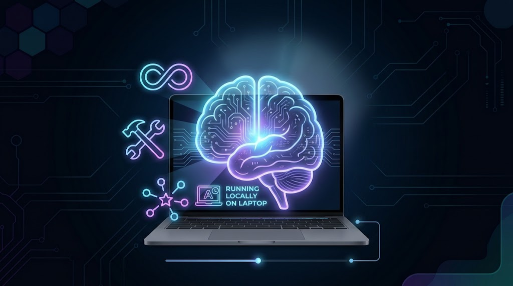
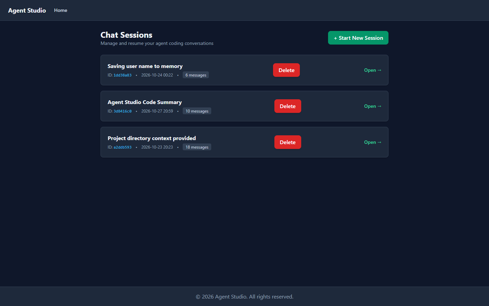
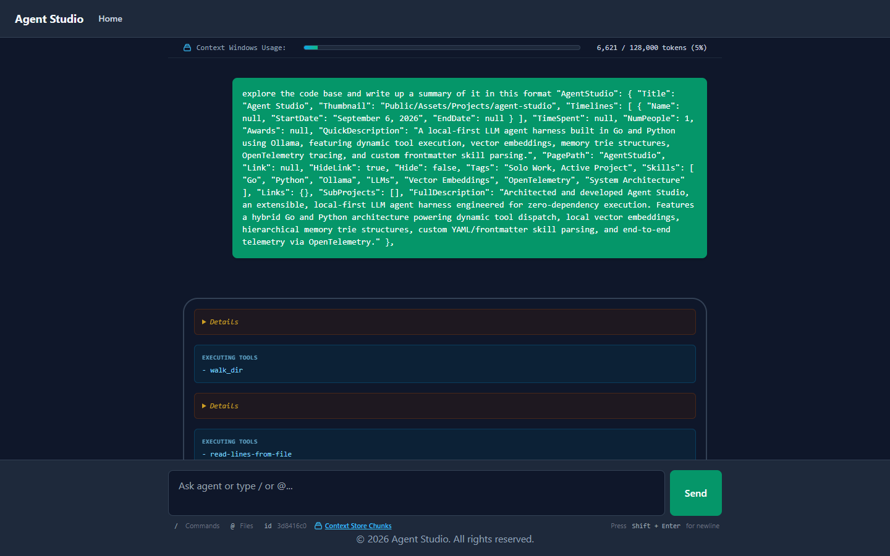
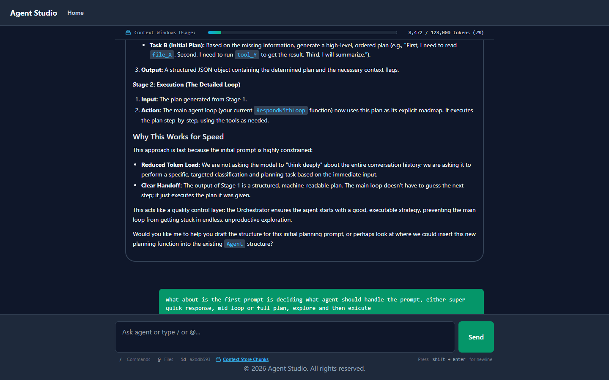

Accessibility
Leave Feedback
Agent Studio
A fully local, privacy-first LLM agent harness written in Go. It runs on Ollama, so no prompt, file or embedding ever leaves my machine.

2 Months
Solo
Skills Used:
Go
Docker
Java Script
HTML
CSS
Git
Why I Built It
Most agent tooling hides the interesting parts behind an SDK. I wanted to understand every layer of an agent, from the loop that decides when to call a tool, to the retrieval that feeds it context, so I built the whole stack myself and made it run on small open-weight models on a laptop.
The repository is private, but I am happy to walk through the code in an interview.
How It Works
Agent Loop
A streaming tool-calling loop that sends thinking, content and tool calls to the UI as they are generated. A fast router prompt first classifies the request, so the model only "thinks hard" when it needs to. Steps are capped, long tool output is truncated head and tail, and the directory tree and task list are only re-sent when they change, to save tokens.
Tool System
15 tools (file reading, directory walking, grep, git, task lists, RAG, skills, memories, file patching and shell commands)built on generic, type-safe tool wrappers that generate the JSON schema Ollama needs. Tools are grouped with bit flags, so a run can be limited to read-only tools.
Hybrid RAG
Projects are chunked with Go's AST parser, so functions and methods are indexed with their doc comments, and embedded locally with qwen3-embedding. Queries are rewritten by an LLM, then scored with BM25 and cosine similarity, and merged using Reciprocal Rank Fusion.
Skills & Memory
Skills are markdown files with YAML frontmatter. Only their names and descriptions are put in the system prompt, and the full instructions are loaded on demand to keep context small. Memories are saved and recalled the same way, and agent personas are defined in markdown too.
Analysis Bots
Goal, post-mortem and summary bots read a finished chat transcript and write a Markdown report on what the user wanted, what went wrong and what to do next. A priority job queue runs them in the background, for example to auto-title sessions.
Automated Evaluation
A golden-sample test suite runs prompts through the real agent and keeps each session. An LLM-as-a-judge prompt then scores it from 1 to 5 on task completion, constraint adherence, tool accuracy, safety and efficiency, which gives me a way to measure prompt and tool changes.
Web UI & CLI
A Go (chi) server with a vanilla JavaScript chat page that streams responses over server-sent events, with persistent sessions, slash-command autocomplete and a context viewer. There is also a command line mode, and Docker Compose runs Ollama with GPU support.
Screenshots

Sessions
Every conversation is saved and can be resumed. Titles are written automatically by a background bot.
Live Tool Calls
The agent explores a codebase with its tools, and each call is shown in the chat as it happens, with a bar for how much of the context window is used.


Streaming Chat
Answers stream in as Markdown, with code formatting, and the same chat is used to talk through design ideas for the agent itself.
What It Shows
Systems design and concurrency in Go, practical LLM engineering (tool calling, prompt design, retrieval, evaluation), search and ranking algorithms implemented from scratch, and building a full-stack tool end to end on my own.